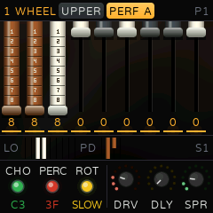
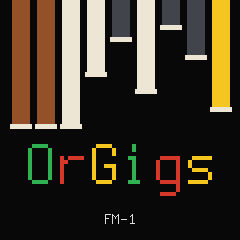

OrGigs
It's an organ. Free and open source (GPL-3.0), for the M-VAVE SMK-37 Elite and FM-1. Version 1.0.

SMK-37 Elite
A three-manual organ with 84 free-running tone generators and no voice stealing: eight models from tonewheel and combo organs to pipe organs and free reeds, drawbars, percussion, rotary, drive, delay and reverb, 16 performance setups, three MIDI zones and Yamaha SEQTRAK control.

FM-1
A three-manual organ with 84 free-running tone generators and no voice stealing: eight models from tonewheel and combo organs to pipe organs and free reeds, drawbars, percussion, rotary, drive, delay and reverb, 16 performance setups, three MIDI zones and Yamaha SEQTRAK control.
Packages: orgigs-1.0-smk37-elite.fwsc (SMK-37 Elite_970), orgigs-1.0.fwsc (FM-1_970) · licences. Installing custom firmware is at your own risk. All product names are trademarks of their owners and are used only to identify compatible devices; OrGigs is not affiliated with them.